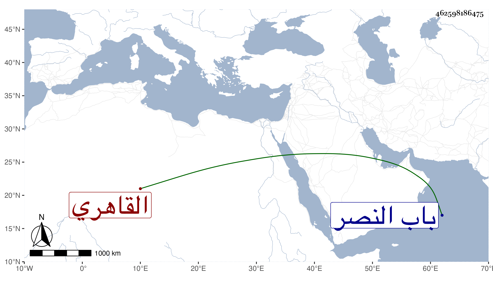

0902Sakhawi.DawLamic.ITO20230111-ara1.EIS1600.462598186475
Biography ID: 462598186475
219
أحمد بن محمد بن أحمد بن راهب شهاب الدين القاهري ويعرف بالدبيب تصغير دب . ولد في جمادى الأولى سنة سبع وستين وسبعمائة وكان شيخا ظريفا مفرط القصر داهية حافظا لكتاب الله حضر عند ابن أبي البقاء وغيره وتنزل في الجهات وباشر النقابة في بعض الدروس وكتابة الغيبة بالخانقاه البيبرسية ورأيت بعد موته سماعه لصحيح مسلم على الجمال الأميوطي وكذا بأخرة على الشهاب الواسطي للمسلسل وأجزائه ، وما أظنه حدث نعم قد لقيته مرارا وعلقت عنه من نوادره ولطائفه اليسير وكان مكرما لي . مات في يوم الاثنين ثامن ربيع الأول سنة سبع وأربعين بعد أن فجع بولد له كان حسن الذات فصبر وكان له مشهد حافل ودفن بتربة الشيخ نصر خارج باب النصر عند ولده عوضهما الله الجنة .
